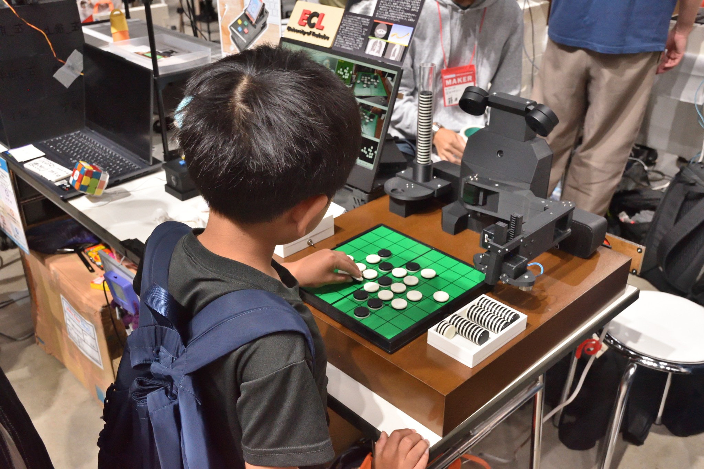
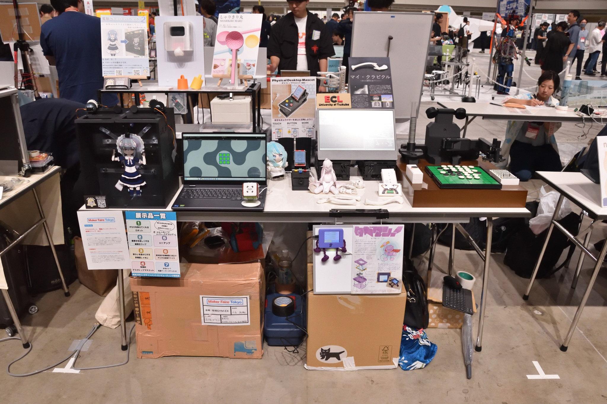

Maker Faire Tokyo 2026
オセロロボット、電動ペーパーパペット、歯磨きコップ、ほか (2026)
筑波大学エンタテインメントコンピューティング研究室として出展しました。私の出展物はオセロ教授ロボット"Minoth"と"マイ・クラビクル"です。




詳細
公式ページ: Maker Faire Tokyo 2026
日時: 2026/9/5（土）12:00～18:00、2026/9/6（日）10:00〜17:00
会場: 有明GYM-EX (ジメックス) (東京都江東区有明一丁目10番1号)
入場料:
- [超早割] 大人 1,000円／18歳未満 400円
- [前売] 大人 1,400円／大人（夕方割）1,000円／18歳未満 500円
- [当日] 大人 1,800円／大人（夕方割）1,300円／18歳未満 700円
出展ブース: B-04-03
出展者ページ